「성경적인 풍경사진도 좋아, 꼭 우리교회 사진 아니어도 돼」·「만들지는 마」 말씀에 따라, 실제 사진만(인공지능으로 만든 그림 0장) 모았습니다. 맨 위 세 장은 지금 표어를 그대로 얹어 첫 화면처럼 보여 드리고, 그 아래에 주제별 후보를 크게 놓았습니다. 사진을 누르면 크게 열립니다.
사진을 어디서 가져왔나 — 전부 위키미디어 공용(Wikimedia Commons)에서, 그중에서도 사진가들의 심사를 통과한 「추천·우수 사진」 모음에서 골랐습니다(일부 성경 사진만 일반 등록 사진). 작가·라이선스·원본 크기는 각 사진의 원본 페이지 정보를 그대로 받아 적었고, 사진마다 출처 페이지 링크를 달았습니다.
라이선스 — CC BY-SA 4.0 18장 · CC BY-SA 3.0 6장 · Public domain 1장 · CC BY 4.0 1장 · CC BY 2.0 1장 · CC BY-SA 2.5 1장. 모두 상업적 이용이 허락된 라이선스만 남겼습니다. 다만 CC BY / CC BY-SA 사진을 쓰면 홈페이지 어딘가(예: 맨 아래)에 「사진: 작가 이름 / 라이선스」를 한 줄 적어야 합니다.
고른 기준 — 가로 2400픽셀 이상 · 가로로 긴 사진 · 얼굴이 크게 나온 사진 제외 · 유명 관광지로 바로 알아보이는 곳 제외 · 색이 과하게 진한 사진 제외(색 진하기를 기계로 재서 상위 25%를 뺌).
Unsplash·Pexels 는 이번에 빠졌습니다 — 두 곳 모두 자동 접속을 막는 확인 화면·열쇠(API 키)가 있어 작가·라이선스를 직접 확인할 수 없었습니다(무료 개발자 키를 발급받으면 같은 방식으로 추가할 수 있습니다).
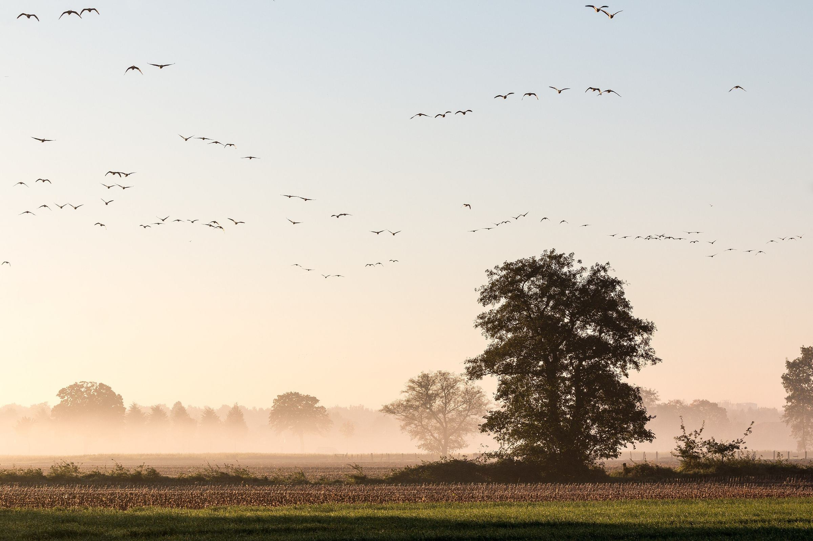
미리보기 1 · 새벽 안개 들판미리보기 1 · 새벽 안개 들판 — 하늘이 넓게 비어 있어 표어가 가장 편하게 읽힙니다. 안개·새떼·홀로 선 나무 — 조용한 전시 사진 같은 느낌.
Dietmar Rabich
CC BY-SA 4.0 — 상업 이용 가능 · 작가·라이선스 표기 필요 · 사진을 고쳐 쓰면 같은 라이선스로 공개
원본 5076×3384 · Commons 추천 사진(Featured) · 출처 페이지 ↗
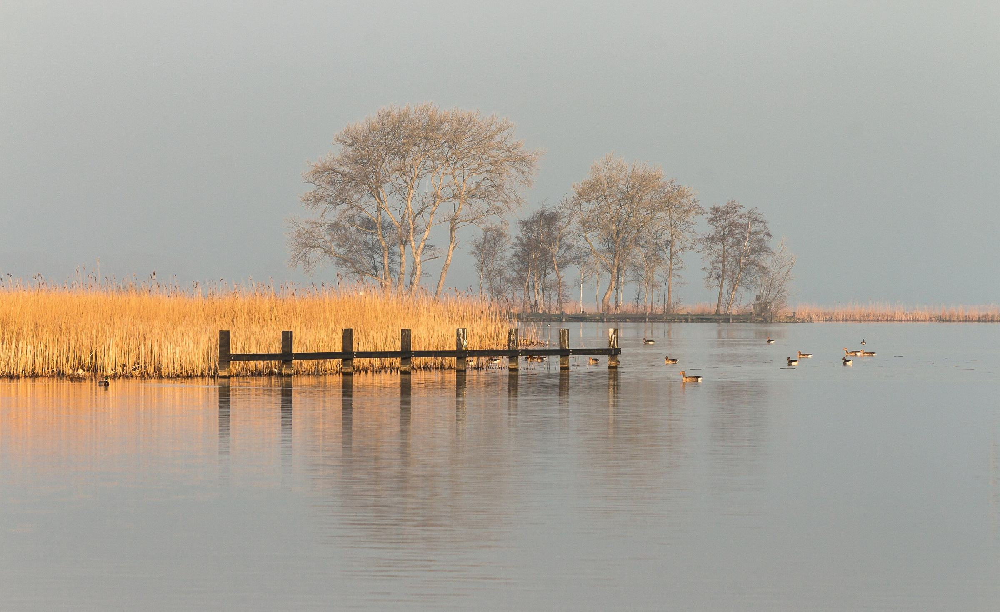
미리보기 2 · 안개 낀 호숫가미리보기 2 · 안개 낀 호숫가 — 옅은 회청색 물과 금빛 갈대. 색이 적고 여백이 많아 가장 ‘깔끔’합니다. 풍경을 가리지 않도록 글자를 아래쪽 잔잔한 물 위에 두었습니다.
Dominicus Johannes Bergsma
CC BY-SA 4.0 — 상업 이용 가능 · 작가·라이선스 표기 필요 · 사진을 고쳐 쓰면 같은 라이선스로 공개
원본 5184×3173 · Commons 우수 사진(Quality) · 출처 페이지 ↗
미리보기 3 · 빛이 드는 길 — 나무 사이로 빛이 쏟아지는 길 — ‘말씀의 빛’이 가장 직접적으로 느껴집니다. 어두운 사진이라 글자를 밝게 바꿨습니다.
Dietmar Rabich
CC BY-SA 4.0 — 상업 이용 가능 · 작가·라이선스 표기 필요 · 사진을 고쳐 쓰면 같은 라이선스로 공개
원본 5184×3456 · Commons 추천 사진(Featured) · 출처 페이지 ↗
사막의 능선·마른 들길 — 광야를 지나는 백성의 길
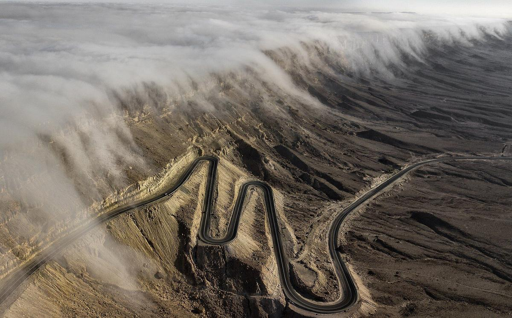
ZeevStein
CC BY-SA 4.0 — 상업 이용 가능 · 작가·라이선스 표기 필요 · 사진을 고쳐 쓰면 같은 라이선스로 공개
원본 3604×2240 · Commons 추천 사진(Featured) · 출처 페이지 ↗
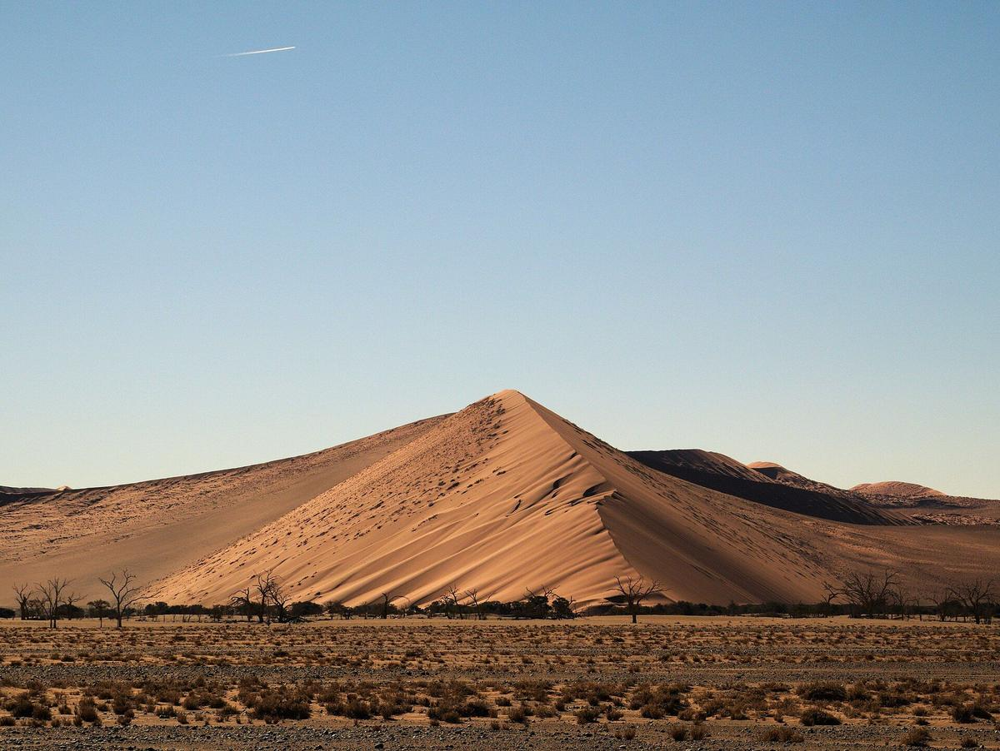
Daniel Kraft
CC BY-SA 3.0 — 상업 이용 가능 · 작가·라이선스 표기 필요 · 사진을 고쳐 쓰면 같은 라이선스로 공개
원본 4600×3456 · Commons 우수 사진(Quality) · 출처 페이지 ↗
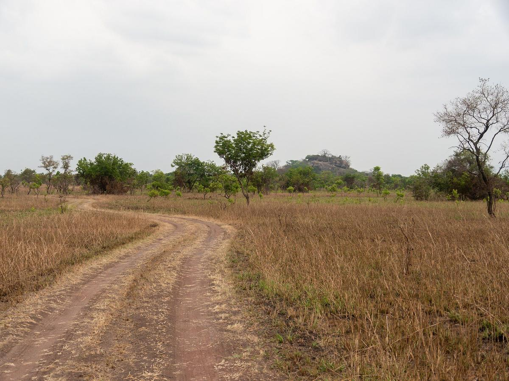
Matti Blume
CC BY-SA 4.0 — 상업 이용 가능 · 작가·라이선스 표기 필요 · 사진을 고쳐 쓰면 같은 라이선스로 공개
원본 4608×3456 · Commons 우수 사진(Quality) · 출처 페이지 ↗
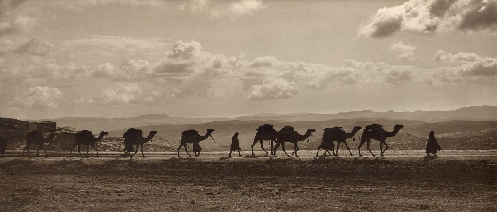
American Colony Jerusalem
Public domain — 상업 이용 가능 · 표기 의무 없음(퍼블릭 도메인)
원본 4525×1932 · Commons 추천 사진(Featured) · 출처 페이지 ↗
안개 낀 새벽 들판과 나무 사이로 드는 빛
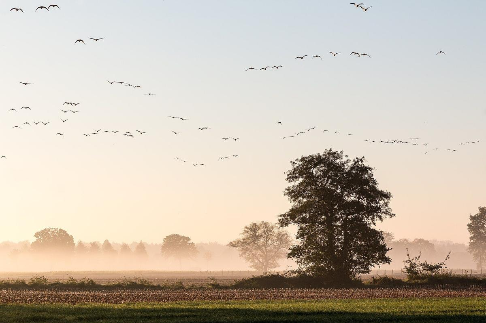
Dietmar Rabich
CC BY-SA 4.0 — 상업 이용 가능 · 작가·라이선스 표기 필요 · 사진을 고쳐 쓰면 같은 라이선스로 공개
원본 5076×3384 · Commons 추천 사진(Featured) · 출처 페이지 ↗
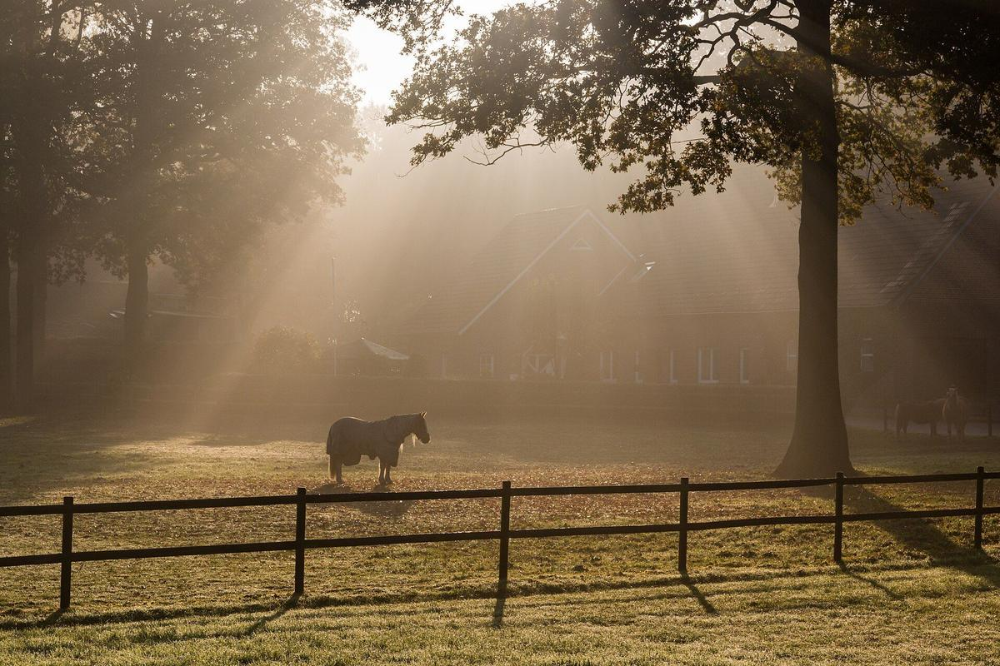
Dietmar Rabich
CC BY-SA 4.0 — 상업 이용 가능 · 작가·라이선스 표기 필요 · 사진을 고쳐 쓰면 같은 라이선스로 공개
원본 4801×3201 · Commons 추천 사진(Featured) · 출처 페이지 ↗
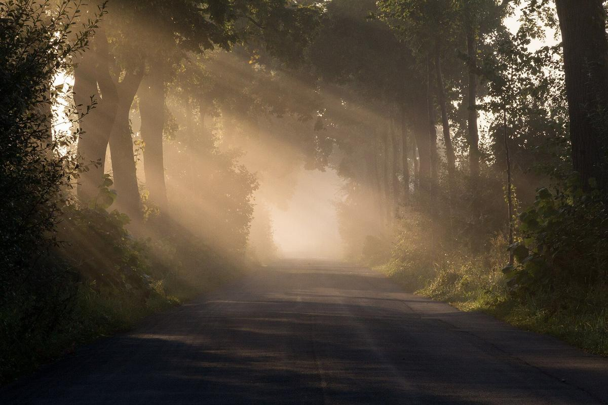
Dietmar Rabich
CC BY-SA 4.0 — 상업 이용 가능 · 작가·라이선스 표기 필요 · 사진을 고쳐 쓰면 같은 라이선스로 공개
원본 5184×3456 · Commons 추천 사진(Featured) · 출처 페이지 ↗
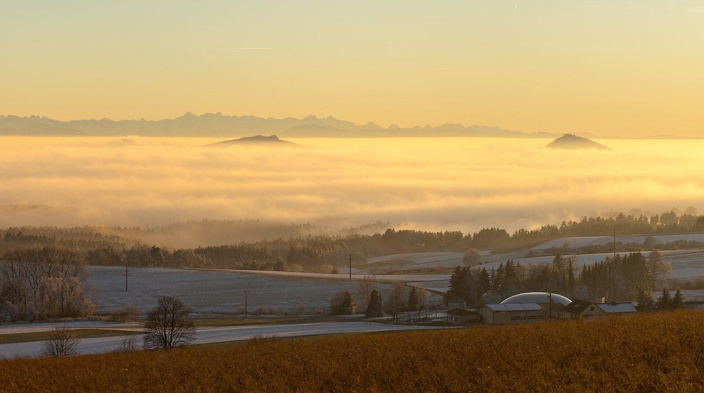
Jörg Braukmann
CC BY-SA 4.0 — 상업 이용 가능 · 작가·라이선스 표기 필요 · 사진을 고쳐 쓰면 같은 라이선스로 공개
원본 6900×3859 · Commons 추천 사진(Featured) · 출처 페이지 ↗
익은 밀밭, 오래된 올리브 숲, 포도원 언덕
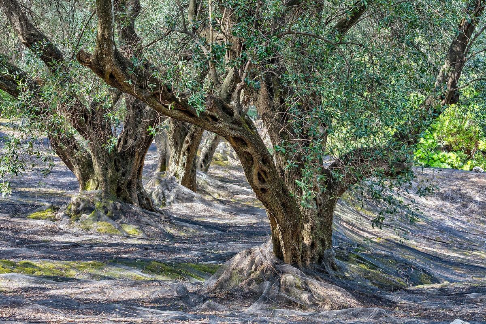
Dietmar Rabich
CC BY-SA 4.0 — 상업 이용 가능 · 작가·라이선스 표기 필요 · 사진을 고쳐 쓰면 같은 라이선스로 공개
원본 6712×4479 · Commons 추천 사진(Featured) · 출처 페이지 ↗
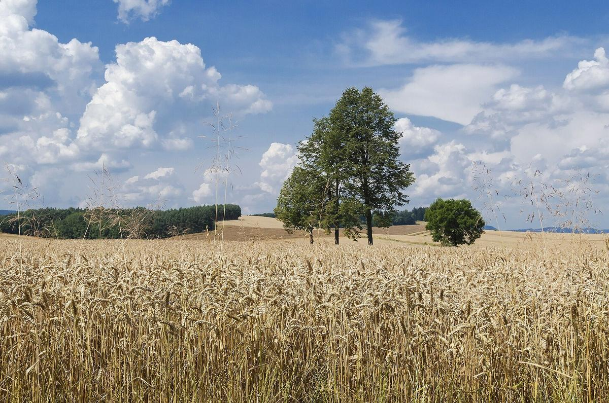
Jacek Halicki
CC BY-SA 4.0 — 상업 이용 가능 · 작가·라이선스 표기 필요 · 사진을 고쳐 쓰면 같은 라이선스로 공개
원본 4028×2668 · Commons 추천 사진(Featured) · 출처 페이지 ↗
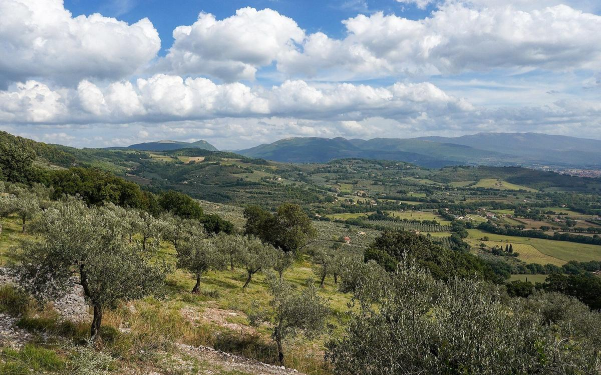
This Photo was taken by Timothy A. Gonsalves. Feel free to use my ph…
CC BY-SA 4.0 — 상업 이용 가능 · 작가·라이선스 표기 필요 · 사진을 고쳐 쓰면 같은 라이선스로 공개
원본 5298×3311 · Commons 추천 사진(Featured) · 출처 페이지 ↗
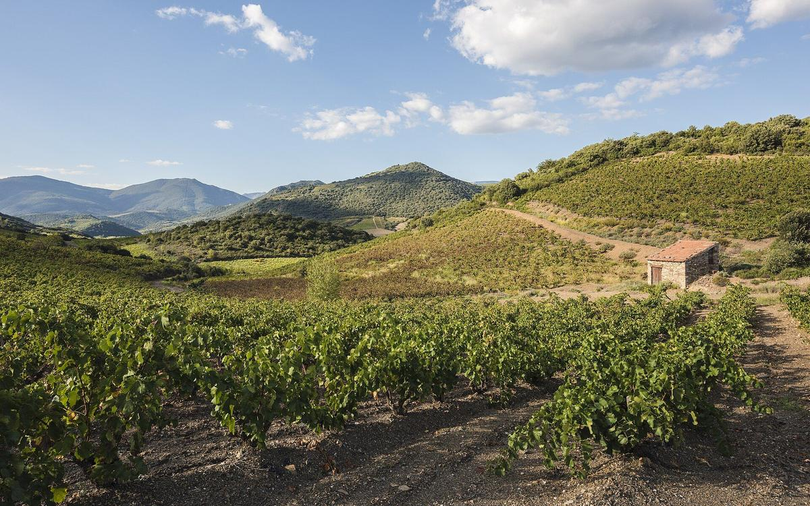
Christian Ferrer
CC BY-SA 4.0 — 상업 이용 가능 · 작가·라이선스 표기 필요 · 사진을 고쳐 쓰면 같은 라이선스로 공개
원본 7360×4600 · Commons 추천 사진(Featured) · 출처 페이지 ↗
고요한 호수의 작은 배, 갈릴리 바닷가
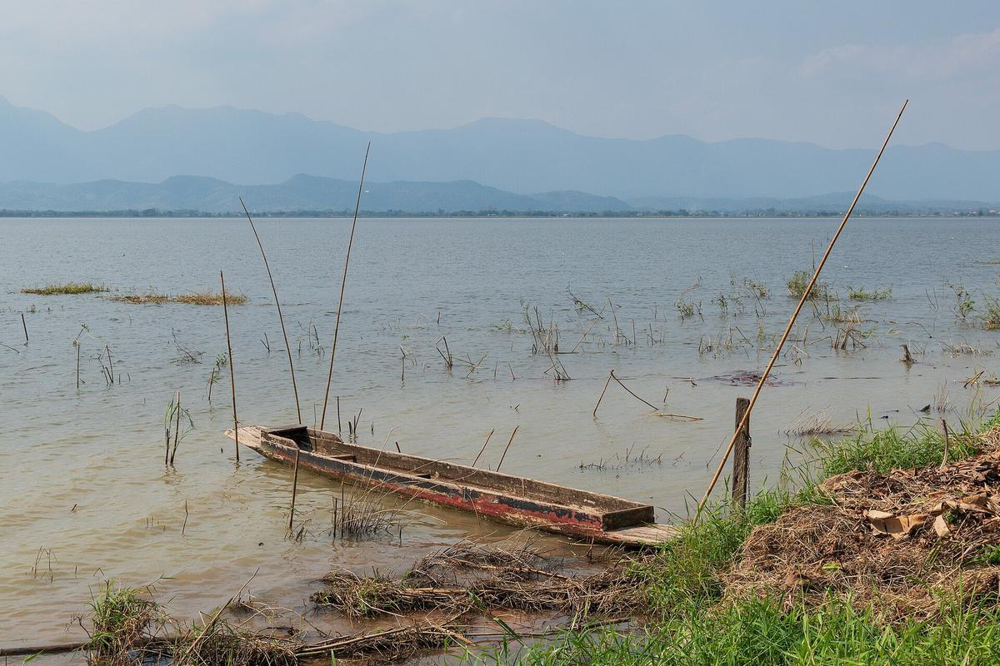
Dominic Nelson
CC BY-SA 4.0 — 상업 이용 가능 · 작가·라이선스 표기 필요 · 사진을 고쳐 쓰면 같은 라이선스로 공개
원본 6000×4000 · Commons 추천 사진(Featured) · 출처 페이지 ↗
Dominicus Johannes Bergsma
CC BY-SA 4.0 — 상업 이용 가능 · 작가·라이선스 표기 필요 · 사진을 고쳐 쓰면 같은 라이선스로 공개
원본 5184×3173 · Commons 우수 사진(Quality) · 출처 페이지 ↗
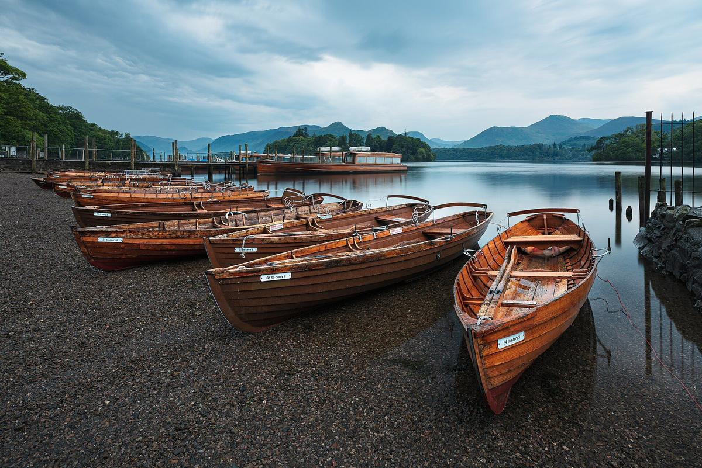
Julian Herzog (Website)
CC BY 4.0 — 상업 이용 가능 · 작가·라이선스 표기 필요
원본 5646×3769 · Commons 우수 사진(Quality) · 출처 페이지 ↗
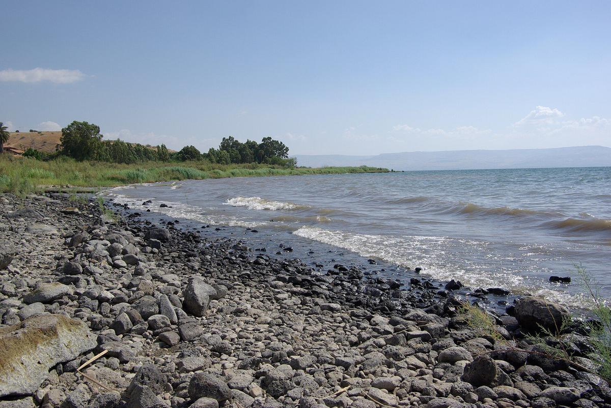
Berthold Werner
CC BY-SA 3.0 — 상업 이용 가능 · 작가·라이선스 표기 필요 · 사진을 고쳐 쓰면 같은 라이선스로 공개
원본 3872×2592 · Commons 우수 사진(Quality) · 출처 페이지 ↗
펼친 성경과 촛불·창빛
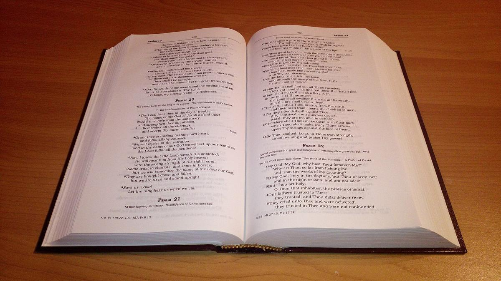
Veverve
CC BY-SA 4.0 — 상업 이용 가능 · 작가·라이선스 표기 필요 · 사진을 고쳐 쓰면 같은 라이선스로 공개
원본 4096×2304 · 일반 등록 사진 · 출처 페이지 ↗
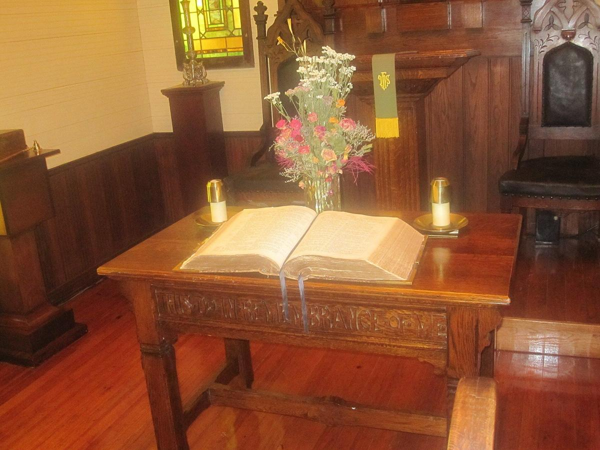
Billy Hathorn
CC BY-SA 3.0 — 상업 이용 가능 · 작가·라이선스 표기 필요 · 사진을 고쳐 쓰면 같은 라이선스로 공개
원본 4000×3000 · 일반 등록 사진 · 출처 페이지 ↗
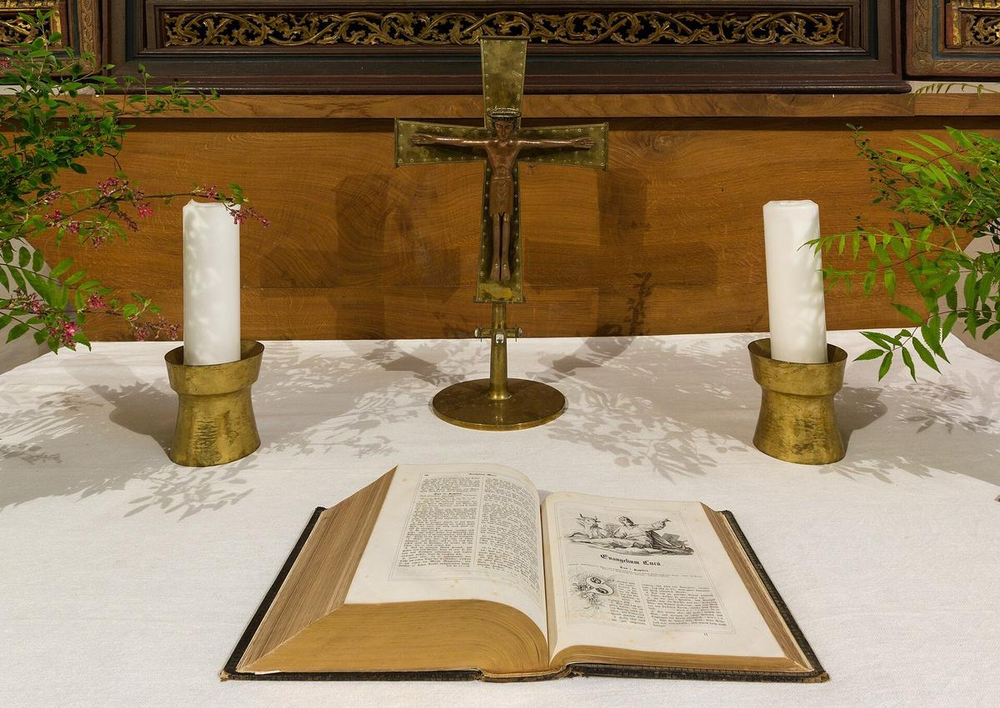
Dietmar Rabich
CC BY-SA 4.0 — 상업 이용 가능 · 작가·라이선스 표기 필요 · 사진을 고쳐 쓰면 같은 라이선스로 공개
원본 4825×3417 · Commons 추천 사진(Featured) · 출처 페이지 ↗
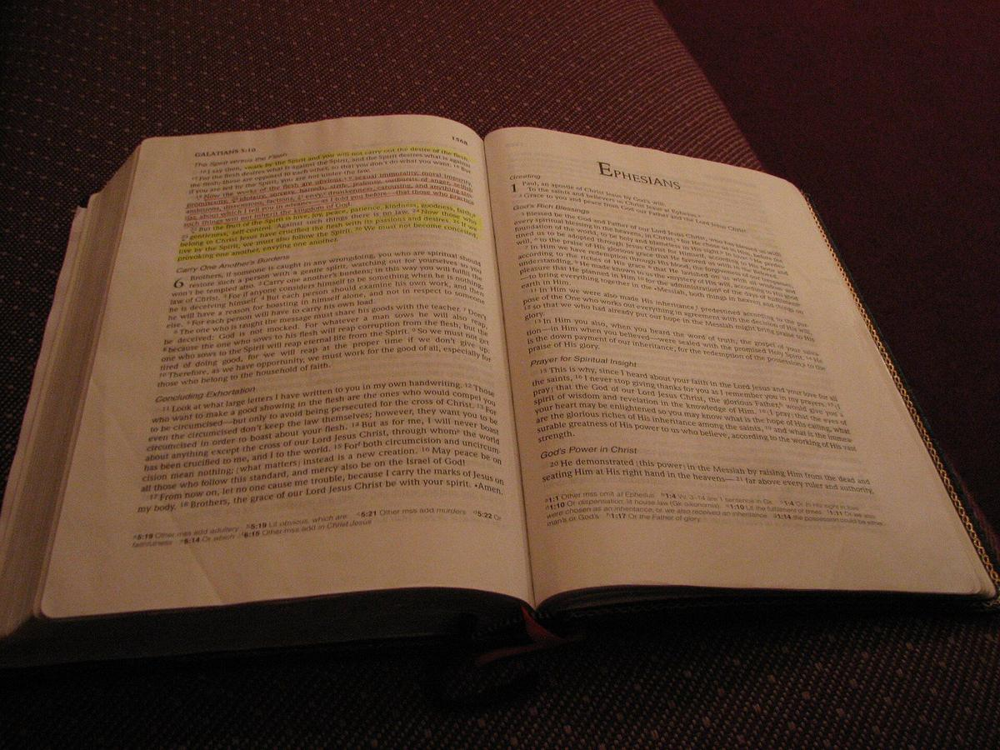
George Bannister from Woodville, MS, USA
CC BY 2.0 — 상업 이용 가능 · 작가·라이선스 표기 필요
원본 2592×1944 · 일반 등록 사진 · 출처 페이지 ↗
돌담이 이어지는 골짜기, 옛 돌기둥
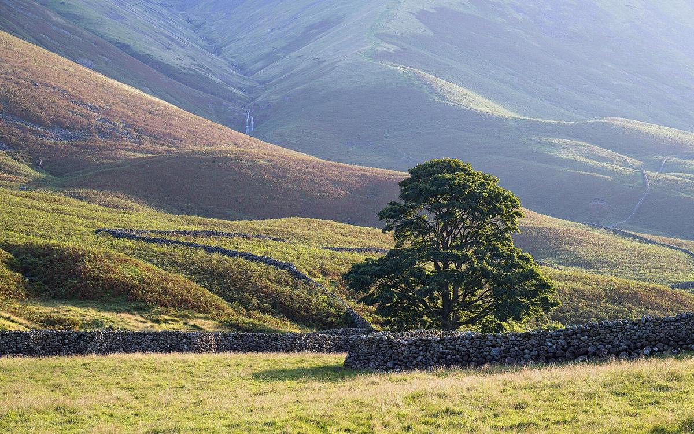
Julian Herzog (Website)
CC BY-SA 4.0 — 상업 이용 가능 · 작가·라이선스 표기 필요 · 사진을 고쳐 쓰면 같은 라이선스로 공개
원본 8048×5030 · Commons 추천 사진(Featured) · 출처 페이지 ↗
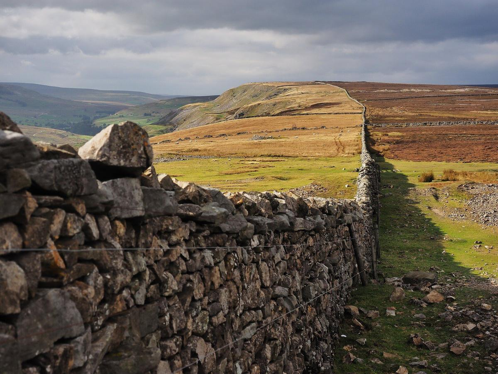
Kreuzschnabel
CC BY-SA 3.0 — 상업 이용 가능 · 작가·라이선스 표기 필요 · 사진을 고쳐 쓰면 같은 라이선스로 공개
원본 4608×3456 · Commons 우수 사진(Quality) · 출처 페이지 ↗
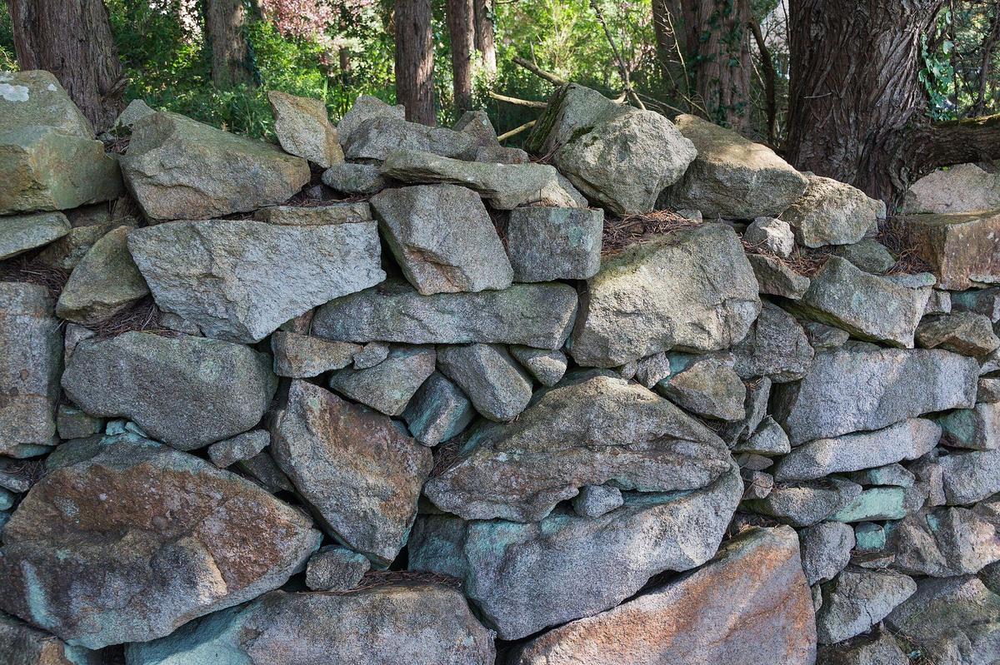
Jebulon
CC BY-SA 4.0 — 상업 이용 가능 · 작가·라이선스 표기 필요 · 사진을 고쳐 쓰면 같은 라이선스로 공개
원본 4592×3056 · Commons 우수 사진(Quality) · 출처 페이지 ↗
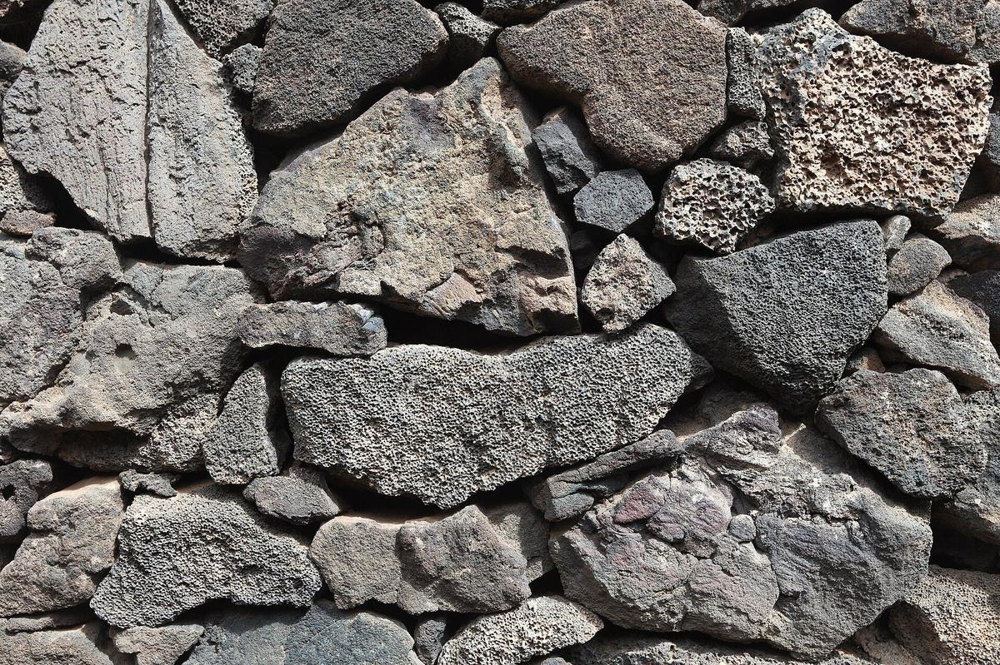
Luis Miguel Bugallo Sánchez (Lmbuga)
CC BY-SA 3.0 — 상업 이용 가능 · 작가·라이선스 표기 필요 · 사진을 고쳐 쓰면 같은 라이선스로 공개
원본 4334×2887 · Commons 우수 사진(Quality) · 출처 페이지 ↗
안개 속 양떼, 먼지 길을 걷는 양떼와 목자
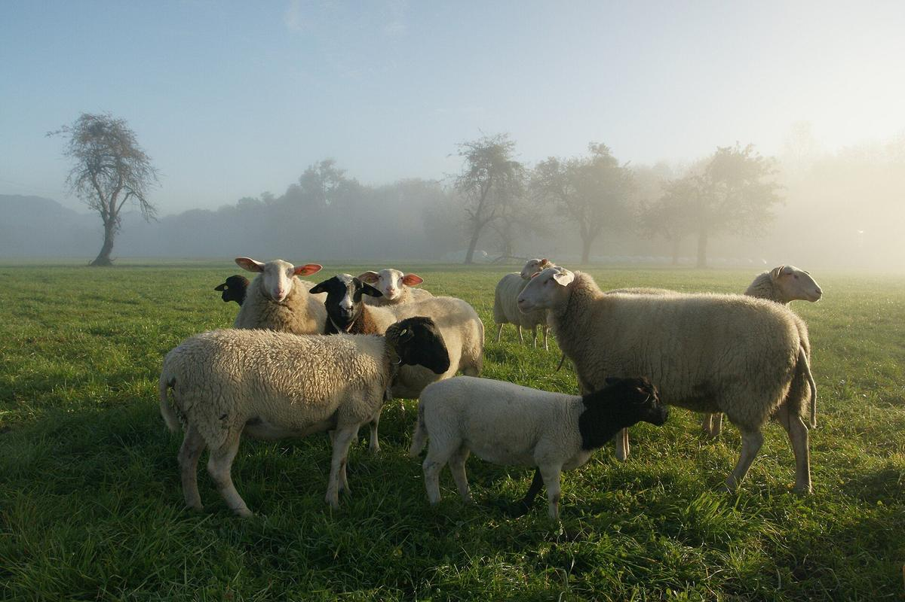
--Böhringer
CC BY-SA 2.5 — 상업 이용 가능 · 작가·라이선스 표기 필요 · 사진을 고쳐 쓰면 같은 라이선스로 공개
원본 4272×2848 · Commons 우수 사진(Quality) · 출처 페이지 ↗
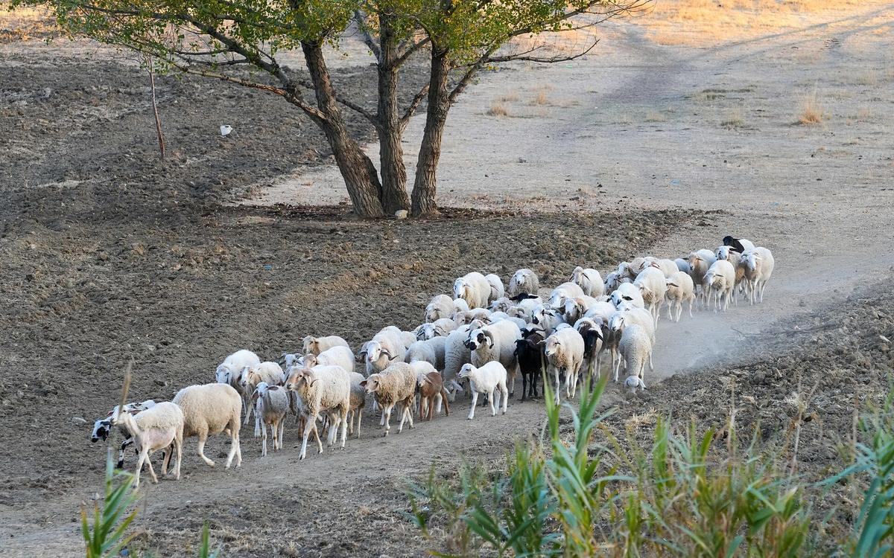
This Photo was taken by Timothy A. Gonsalves. Feel free to use my ph…
CC BY-SA 4.0 — 상업 이용 가능 · 작가·라이선스 표기 필요 · 사진을 고쳐 쓰면 같은 라이선스로 공개
원본 8221×5138 · Commons 우수 사진(Quality) · 출처 페이지 ↗
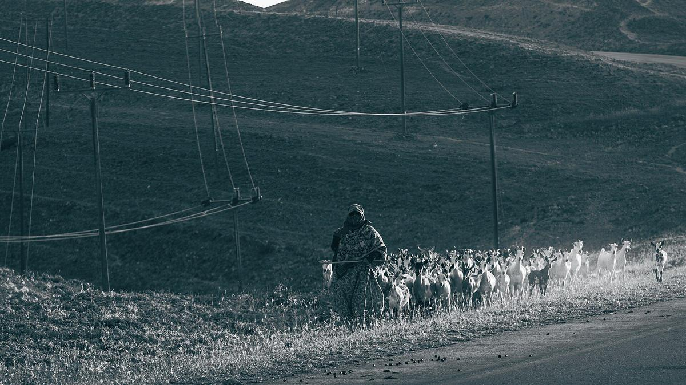
Erfan.arafat
CC BY-SA 4.0 — 상업 이용 가능 · 작가·라이선스 표기 필요 · 사진을 고쳐 쓰면 같은 라이선스로 공개
원본 5440×3060 · Commons 우수 사진(Quality) · 출처 페이지 ↗
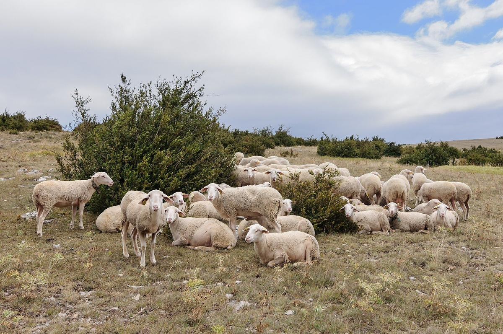
Myrabella
CC BY-SA 3.0 — 상업 이용 가능 · 작가·라이선스 표기 필요 · 사진을 고쳐 쓰면 같은 라이선스로 공개
원본 3380×2244 · Commons 우수 사진(Quality) · 출처 페이지 ↗